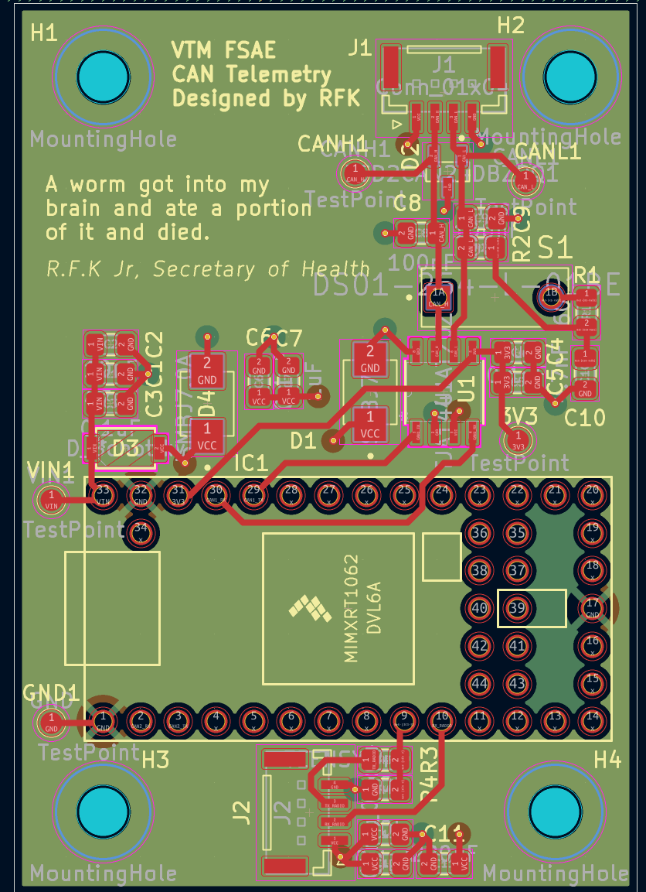
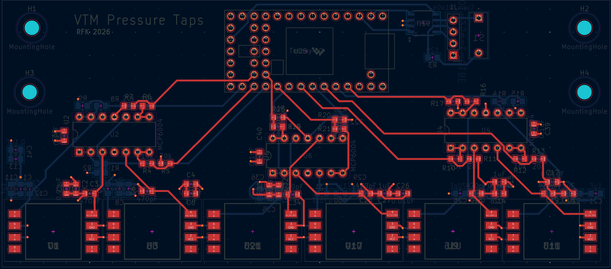

engineer mode was designed using exclusively html/css/js to emulate the classic personal website.
built by rvl | april 2026

[module: fsae_telemetry]
Formula SAE Real-Time Telemetry System
Embedded Systems • CAN • RF Communication • Teensy 4.0 • Python
exec: inspect telemetry
Developed a real-time CAN-based telemetry system for Formula SAE vehicle testing.
Designed RF-enabled PCB with Teensy 4.0 and Python dashboard for live visualization.
[module: space_power]
ISS Additive Manufacturing Power System
Power Electronics • Embedded Systems • Space Systems • KiCad
exec: inspect pdu
Designed and validated a power distribution unit for an ISS-deployed autonomous 3D printing payload.
Implemented regulated space-grade power architecture with thermal control.

[module: aero_sensing]
CAN-Based Aerodynamic Pressure System
Embedded Systems • CAN • PCB Design • Data Acquisition • Distributed Sensing
exec: inspect aero
Developed a CAN-based distributed pressure sensing system for Formula SAE aerodynamic testing.
Designed PCB integrating 12 pressure transducers with Teensy-based acquisition.
[syscall: whois]
user@vt:~$ whoisrvl
Electrical Engineering and Classics @ Virginia Tech
Electrical Systems with VTM Formula SAE
Automotive Technician with Virginia Tech Transportation Institute
College of Engineering Dean's Team
Looking for internships in embedded systems, power electronics, and automotive systems.
Power Systems • Aerospace • DoD / Northrop Grumman ecosystem
impact mission-ready architecturerole power systems designstack power electronics • KiCad
Designed power architecture for autonomous ISS 3D printing payload.
Worked on thermal regulation, distribution design, and system trade studies.
view notes
Problem: deliver reliable regulated power in a constrained aerospace environment.
Approach: structured distribution strategy with thermal and protection considerations.
Result: validated architecture for mission-relevant operation conditions.
Formula SAE Telemetry System
Embedded Systems • CAN Bus • RF • PCB Design
impact faster test feedback looprole embedded + PCB implementationstack CAN • Teensy • Python
Built real-time telemetry pipeline for race vehicle testing using 900MHz RF and CAN decoding.
Designed PCB for sensor acquisition and pit visualization system.
view notes
Problem: low-latency visibility into live vehicle data during testing.
Approach: CAN ingest, RF transport, and dashboard visualization pipeline.
Result: improved testing feedback loop for iterative vehicle tuning.
Developed hardware-level systems for sensing, control, and embedded data acquisition.
Experience spans PCB design, logic systems, and system integration.
view notes
Problem: integrate sensing and control subsystems into robust hardware workflows.
Approach: iterate through embedded prototypes and integration validation.
Result: stronger system-level engineering coverage across digital and hardware domains.
Build Timeline
Power Systems Engineer — ISS Additive Manufacturing Experiment